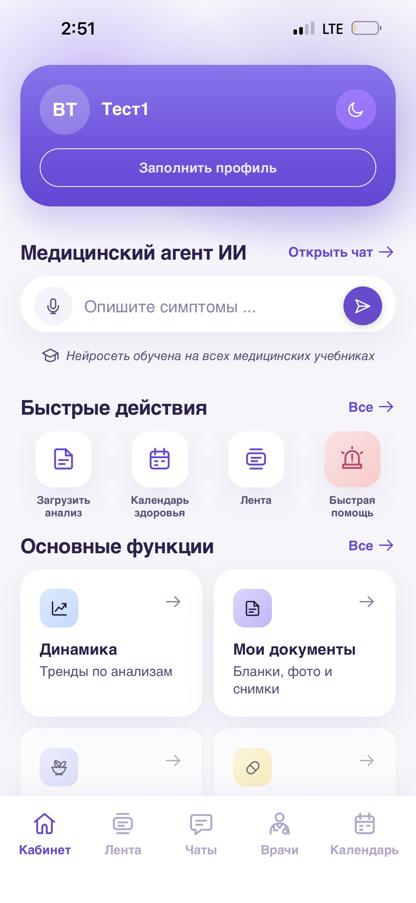

Запись через несколько дней
Ради одного вопроса — запись, очередь и дорога в поликлинику.
Понятный ответ на вопрос о здоровье — сразу. А рядом — ваш врач, который знает вашу историю.

Консилиум — приложение, где медицинский ИИ и ваш личный врач работают вместе.
Больше не нужно ждать приёма, чтобы получить ответ на свой вопрос.
Медицинский ИИ ответит сразу, а ваш врач будет на связи.
Консилиум всегда под рукой — в вашем телефоне.
Понятный ответ — сразу, без записи и очередей.
Разовая консультация на 24 часа или подписка на месяц.
ИИ помогает разобраться, решения принимает врач. Сервис не заменяет экстренную медицинскую помощь (112 / 103).